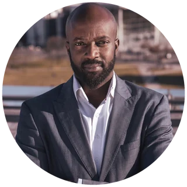

Dort arbeite ich. Mit Geschäftsführern und Führungsteams, deren bisheriges Repertoire nicht mehr reicht. Mit jungen Erwachsenen vor einer wesentlichen Weichenstellung. Mit Gründerinnen und Gründern unter Druck.
Für Founder: Founder Resonance Assessment auf light-creators.com
Ein Vorstand hat drei Transformationsprogramme nacheinander gestartet, und keines davon hat wirklich funktioniert.
Eine Geschäftsführerin führt seit fünfzehn Jahren erfolgreich und merkt, dass ihr Repertoire diesmal nicht reicht.
Ein Gründer hat gute Zahlen und ein gutes Deck und bekommt trotzdem kein Term Sheet.
Ein Neunzehnjähriger weiß nicht, wer er ist und wofür er einen sinnvollen Beitrag leisten will und kann.
Vier verschiedene Leben. Derselbe Ort.
Ich nenne ihn die Entwicklungskante. An dieser Kante bringt mehr vom Selben nichts mehr. Was hilft, ist jemand, der den Raum hält, bis die eigene Antwort da ist.
Für die Strategie gibt es Berater. Für die Umsetzung gibt es Projektleiter. Für den Kopf gibt es Coaches. Für die Zeit dazwischen, in der die alte Antwort schon weg und die neue noch nicht da ist, gibt es niemanden.
Dabei entscheidet sich genau dort, ob eine Organisation ihre besten Leute behält. Ob ein Führungsteam wieder entscheidungsfähig wird. Ob ein junger Mensch seine eigene Richtung findet oder die von jemand anderem übernimmt.
Ein Übergang lässt sich nicht managen. Er braucht Bedingungen, unter denen Menschen ihre eigenen Antworten finden. Die erschaffe ich.
Zukunft kündigt sich an, bevor sie sichtbar wird. Meistens zuerst als Unruhe, als Reibung, als das Thema, das alle kennen und niemand ausspricht. Wer sie hören will, braucht Bedingungen, unter denen sie auftauchen kann.
Dafür habe ich eine Methode mit vier Schritten entwickelt. Ich arbeite damit im Executive Coaching online, in Workshops mit Führungsteams und in den Wäldern Finnlands. Der Prozess bleibt derselbe. Was sich ändert, ist der Ort.
Im Unternehmen: alte Gewissheiten und altes Wissen loslassen. Aussprechen, was nicht mehr trägt, auch wenn es jahrelang richtig war.
Im Wald: Raum schaffen, um das Flüstern der Zukunft zu hören. Zwei Tage ohne Feed und ohne die Meinung aller anderen.
Im Unternehmen: sichere Räume, in denen auch schwierige Emotionen Platz finden und bearbeitet werden. Erst dann lässt sich die Schwelle zum Neuen überschreiten.
Im Wald: sich selbst erkennen, indem man von anderen bezeugt und gespiegelt wird. Entwicklung geschieht in Beziehung.
Im Unternehmen: begründete Zuversicht erkennen und erschaffen. Neue Strategien gemeinsam entwickeln, die kollektiven Stärken entfesseln und daraus eine Zukunft bauen, die tragfähig ist.
Im Wald: die eigenen Stärken und den eigenen Beitrag erkennen, ohne sich im Feed mit anderen zu vergleichen.
Im Unternehmen: eine Entscheidung, die das Team trägt, und ein Entwicklungs-Sprint, an dessen Ende ein erstes konkretes Ergebnis steht.
Zurück aus dem Wald: ein konkreter nächster Schritt und ein Buddy-System an deiner Seite, mit dem du etwas schaffst, was du allein nicht geschafft hättest.
Deshalb ist Threshold kein Nebenprojekt. Es ist dieselbe Arbeit in einer anderen Lebensphase.
Wenn das Geschäftsmodell nicht mehr trägt. Wenn eine Führungskraft oder ein ganzes Team mit dem bisherigen Repertoire nicht mehr weiterkommt. Maßgeschneiderte Programme, Begleitung von Führungsteams, Einzelarbeit auf Geschäftsführungsebene.
The Threshold Program: sechs Tage in den Wäldern Finnlands, für alle, die vor einer wesentlichen Weichenstellung stehen. Kleine Gruppen, Termine auf Anfrage.
Wie Präsenz und Beziehungsführung über Funding und Team entscheiden. Diese Arbeit läuft unter Founder Resonance.
Über 25 Jahre mit Menschen in Verantwortung. Trainer, Coach, Facilitator. In internationalen Leadership-Beratungen habe ich Programme entwickelt und als Client Director und Mitglied der Geschäftsführung der SYNK GROUP Millionenprojekte verantwortet. Über 20.000 Führungskräfte in 25 Ländern, vom Team-Lead bis in die C-Suite.
Ich kenne Führung aus der operativen Realität. Und ich kenne ihren Preis.
Mit Anfang 40 stand ich selbst kurz vor dem Kollaps. Nicht, weil ich unfähig war. Weil ich zu lange funktioniert habe.
Mit 22 war ich vier Tage und Nächte allein auf dem Vision Mountain im Bundesstaat Washington. Fastend. Mit zwei Fragen: Wer bin ich, und was ist mein Beitrag?
Was sich damals zeigte, hat mich seither geführt: die Arbeit an Beziehungen. Zwischen Menschen, in Teams, und zwischen einer Führungskraft und dem, was durch ihre Arbeit wirken will.
Fünfunddreißig Jahre später erschaffe ich die Räume und die schöpferischen Dialoge, die ich damals selbst gebraucht hätte. In den Wäldern Finnlands. In Online-Meetings. In Besprechungsräumen von Unternehmen und Hotels.
Die meisten Anbieter entscheiden sich für eine Seite. Struktur und Evidenz. Oder Tiefe und Präsenz.
Meine Arbeit läuft auf beidem, weil eine Entwicklungskante beides braucht. Die eine Seite ist forschungsbasiert: 25 Jahre Führungsentwicklung, Stärkenarbeit aus der Gallup-Forschung, Lernarchitekturen für Konzerne. Die andere Seite ist 30 Jahre alt und kommt aus der Praxis: kontemplative Arbeit auf der Ebene von Körper, Emotion und Sprache. Dazu eigene Visionssuchen an wilden Orten, keine geliehene Theorie.
Was daraus entsteht, ist kein Kompromiss. Es ist der Grund, warum in meinen Räumen Dinge gesagt werden, die in anderen Räumen nicht gesagt werden.
In den letzten 25 Jahren habe ich Multimillionen-Programme für über 20.000 Teilnehmer konzipiert und geleitet. Zunächst als Senior Learning & Development Consultant bei Gallup, später als Mitglied der Geschäftsführung und Client Director der SYNK GROUP. Eines dieser Programme wurde in meiner Rolle bei der SYNK GROUP mit dem HR Excellence Award ausgezeichnet.
Umsatzverantwortung, Teams, Entscheidungen ohne ausreichende Information: ich kenne die Seite des Tisches, auf der meine Kunden sitzen.
Heute arbeite ich mit Familienunternehmen, mit wachsenden Organisationen und mit Konzernen. Die Fragen sind unterschiedlich groß, die Kante ist dieselbe. Jedes Programm wird für die konkrete Lage gebaut. Standardtrainings gibt es woanders.
In meiner Rolle als Client Director der SYNK GROUP habe ich für Kunden wie die Lufthansa Group, BMW, die Deutsche Bahn, ZF und viele andere gearbeitet.
David is one of the strongest learning & development professionals I have had the pleasure of working with. His sharp mind and refreshing recommendations were highly appreciated by senior executives and had real impact on these leaders and their organisations!

Pa M.K. Sinyan Regional Managing Partner EMEA, GallupI have got to know David as a fantastic trainer, with a unique strength and authenticity when it comes to the topic of leading oneself. His guidance and insights have been invaluable in helping our newly announced leaders to build up core leadership skills and navigate these uncertain times. I highly recommend David for anyone looking to embarque on a self-development journey.
Jahrelang war der Job alles. Kein Privatleben, kein Abstand, nie wirklich zufrieden — egal was das Team leistete. Ich wollte weniger im Unternehmen arbeiten — und mehr daran. Ich wollte wieder ein Leben haben.
Dank des Coachings von David läuft jetzt die interne Abstimmung reibungsloser, die Motivation ist höher und es fällt mir leichter, Wertschätzung zu kommunizieren. Dadurch wurden auch die Leistungen intensiviert.
Meine Mitarbeiter übernehmen mehr Verantwortung. Und die Beziehung zu meinen Kunden ist vertrauensvoller.
Ich habe von außen und auch im Privaten das Feedback bekommen, dass ich gelassener durch das Leben gehe und mehr Ruhe in mir habe. Meine Kommunikation hat sich verbessert, meine Beziehungen haben sich intensiviert.
Ich kann mein Leben wesentlich mehr genießen.
Selbst im Video-Coaching gelang es David, eine beeindruckende Nähe und Verbindung zu schaffen. Noch bemerkenswerter war, wie er mir half, eine innige Verbindung auch zu mir selbst herzustellen — eine Herausforderung, die weit über die Technik hinausgeht.
Du vermittelst mit besonderer Gabe, festgetrampelte Pfade, Sackgassen und Hamsterräder zu verlassen, und mit neuer Energie und Motivation die Dinge zu verfolgen, auf die es ankommt. Mit Hilfe deiner Methoden konnte ich meinen inneren Antrieb nicht nur wiederentdecken, sondern nachhaltig auf ein höheres Level heben.
Das Coaching mit David Liebnau war äußerst wertvoll, da er präzise auf meine individuellen Ziele eingegangen ist und mir sofort anwendbare, alltagstaugliche Impulse mitgegeben hat.
In einer schwierigen beruflichen Situation hat David mir mit einer fokussierten Coaching-Session beeindruckend weitergeholfen. Die Mischung aus Empathie und Zielstrebigkeit — keine endlosen Gespräche, sondern klare Impulse, die wirklich etwas verändern. Ich kann David jedem empfehlen, der nicht nur nach Antworten sucht, sondern echte Veränderung erleben möchte.
Wir haben seit 2019 ein umfangreiches Leadership Programm gemeinsam entwickelt und umgesetzt. Mehrere hundert Führungskräfte von ZF haben daran teilgenommen und haben sehr gute Rückmeldungen gegeben. Vielen DANK dafür.
This podcast is in German — but the work we do together isn't limited by language.
If you're a founder navigating funding, growth, or a critical turning point, and you're curious about what conscious leadership can unlock for you:
The Resonance Assessment takes 3 minutes and is available in English. The Diagnostic Call can also happen in English.
When you're clear, the world follows.
Wer klar ist, dem folgt die Welt.